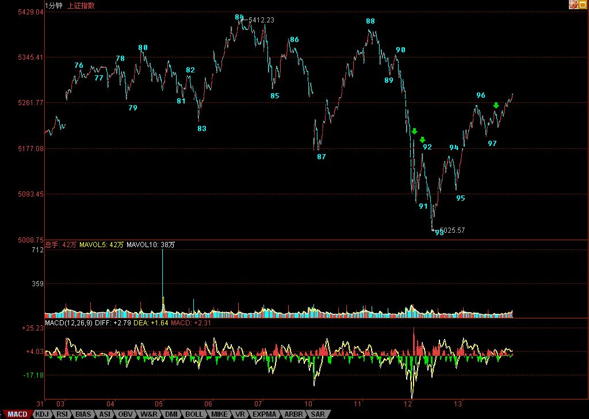

各位注意，严重更正
2007/9/13 20:55:15
各位注意 严重更正
今天收盘后事情不断、电话不断，后来又要赶去看一公司，司机按时到，本ID是在赶着把文章写好，连复查一遍都没有，导致今天的划分出现严重错误。以后尽量把写帖子的时间安排充裕点，但有时候实在太忙，出现点错误，也请各位原谅。
错误的划分还在今天的收盘分析中，本ID也不更改，把错误的放在那里，好当一个比较，对学习划分有大的帮助。错误就在于错把绿箭头的那一下当成一段了，这是错误的，中间那一折仔细看一下就知道不构成一笔，而一段是至少三笔的。
因此，按照正确的划分，大盘的走势比错误划分中显示出更强的趋势，也就是93开始的回抽，是一个标准的线段类上涨，连1分钟中枢还没构成。当然，明天开盘一跌破96，1分钟中枢就形成，而如果不破，97开始的线段依旧延伸，后面的线段回抽不破96，那这线段类上涨就延伸出3个类中枢了，那当然是超强的表现。
至于其他的分析，依然有效，就是76开始的5分钟中枢震荡没形成第三类卖点，线段类上涨都已经穿越5265点，当然比1分钟走势类型穿越5265点还要强悍。
明天，就要注意这线段类上涨的结束位置，然后下来的线段调整，必然形成1分钟中枢，其后走势，都与该1分钟中枢的演化相关，这太简单，就不要详细说了。
等等，找找有没有发现本ID错误的，都给戴上大红花。
[匿名] 赚到了 删除此人所有评论
2007-09-13 17:18:33 [匿名] laowang 删除此人所有评论
2007-09-13 16:23:07 疑问： 缠MM：98——99并不是一线段啊？只是一笔，各位同学有不同意见吗？
========= 同感，97接下来的线段还没走完。
[匿名] 新浪网友 删除此人所有评论
2007-09-13 17:10:22 有疑问：98到99应该不是一个线段吧？我的看法从97开始的线段目前还没有走完，请大家讨论。
[匿名] 新浪网友 删除此人所有评论
2007-09-13 16:27:34 我觉得98、99段分得有问题。我在分时，仅到97段。请斑竹讲解一些。谢谢
找到不少，可能有漏掉的，一律大红花。
由此可见，如本ID反复所说，本ID的理论如同几何学，是可以100%严密地讨论的，这里没有权威，连本ID都不是，本ID错了也就错了，没有什么可说的。
有人说，错了也没什么，只是把一段给分错了，但这里的差别大了去了，因为这样，市场的真实力度等就分析不对了，原来是一个线段类上涨，搞成1分钟走势，那样，回拉的力度差别就大了。而级别越小，证明回拉力度越大，所以必须绝对准确，这才能真正反映市场的真实情况。
必须用最严谨的态度来对待划分，这样才能真正看清楚市场在干什么。
补充一句，600078的基本面，在2个月前就有相关传闻，但那时候关于矿的量没有说法，目前有了新进展，不过最终能否实现对上市公司的装入，那是一个远没答案的问题。而且详勘资料本ID还没看到，所以一切都只是一个传闻，就算本ID最近看到了正式的详勘资料，也绝对不能保证这玩意就能放到上市公司里，所以一定不能以此为准。

回复
缠中说禅 2007/9/13 21:10:56
补充一句，600078的基本面，在2个月前就有相关传闻，但那时候关于矿的量没有说法，目前有了新进展，不过最终能否实现对上市公司的装入，那是一个远没答案的问题。而且详勘资料本ID还没看到，所以一切都只是一个传闻，就算本ID最近看到了正式的详勘资料，也绝对不能保证这玩意就能放到上市公司里，所以一定不能以此为准。
缠中说禅 2007/9/13 21:15:17
[匿名] 新浪网友 删除此人所有评论
2007-09-13 21:13:24
看来明天是个好天气
==
请不要预测，看当下的图。股市不需要愿望，只需要真正的操作。
缠中说禅 2007/9/13 21:16:34
[匿名] 悠悠悠哉 删除此人所有评论
2007-09-13 21:08:24
我也发现了啊 老大表扬我下吧
我就是没胆说出来啊
==
有话就请说出来，本ID这里说什么都可以，只要新浪能承载，本ID这里就没有不能承载的。
缠中说禅 2007/9/13 21:17:47
对不起，昨晚熬夜看球，今天要早点休息，先下，再见。